Qualidade & segurança de alimentos · na prática
Auditoria é um dia.
Qualidade é todo dia.
Eu ajudo indústrias de alimentos, embalagens e logística a tirar os requisitos do papel e colocá-los na rotina — com processos que funcionam, equipes que entendem e padrões que permanecem depois da auditoria.
de alimentos
e palestras
segmentos
GFSI & ISO
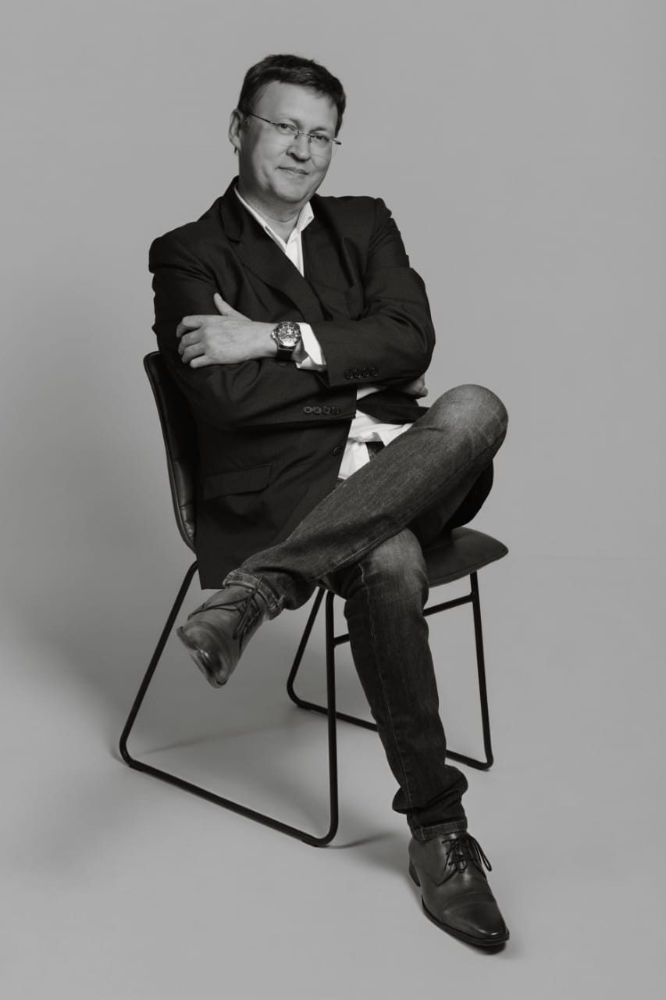
FSSC 22000BRCGS FoodBRCGS Packaging MaterialsBRCGS Storage & DistributionIFS FoodIFS PACsecureIFS BrokerIFS LogisticsSQF CodeISO 9001ISO 14000ISO 45000ISO 19011APPCC/HARA · CodexPCQIFood DefenseFood Fraud
Quem conduz o trabalho
Experiência de quem já viveu
o problema por dentro.
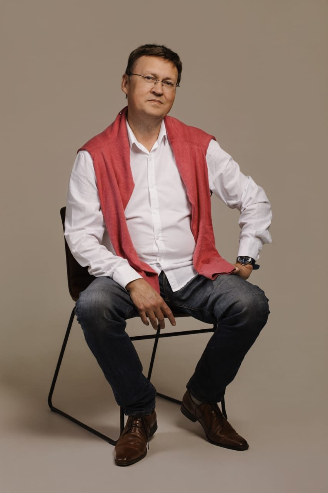
Eduardo Stephano é gastrônomo, farmacêutico, engenheiro de alimentos e engenheiro de segurança do trabalho — com MBA em Gestão da Qualidade, especialização em Segurança dos Alimentos pela SGS e pela USP e formação em Liderança, Comunicação e Relações Humanas. Antes de fundar a ES Consultoria, em novembro de 2017, liderou qualidade em operações de gelatinas, laticínios, frigoríficos, molhos, geleias, emulsionados e logística de alimentos.
Essa trajetória moldou uma forma direta de trabalhar: entender a operação real, traduzir o requisito técnico e desenvolver as equipes durante a implementação. A certificação importa. A capacidade de sustentar o padrão importa ainda mais.
- Engenheiro de Alimentos · Engenheiro de Segurança do Trabalho
- MBA em Gestão da Qualidade
- Especialização em Liderança, Comunicação e Relações Humanas
- Auditor Líder FSSC 22000 · ISO 22000 · ISO 9001 · IFS Food · BRCGS
Credenciais & escopo
Formação técnica aplicada à operação- 01Auditor LíderISO 9001 & FSSC 22000 · NSF
- 02Auditor GMPBRCGS · FSSC · IFS · SQF
- 03Consultor registrado IFSFood · PacSecure · Broker · Logistics · SQF
- 04PCQIFormação DNV
- 05Perito JudicialEspecialidade em alimentos
- 06Food ServiceMCD · BK · Subway · YUM! · Bob's
Trajetória profissional
1997 — hojeGelita do Brasil
Base técnica em P&D e controle de qualidade: cromatografia, análise sensorial e validação de processos para gelatinas alimentícias.
Medapi Farmacêutica
Gestão da qualidade e registro de medicamentos e suplementos em um ambiente regulado e de alta responsabilidade.
Junior Alimentos
Da supervisão de produção à coordenação de Qualidade e Food Safety, com gestão de 140 fornecedores e laboratório próprio.
Kerry do Brasil
Liderança QHSE de uma equipe com 23 profissionais, conduzindo HACCP/FMEA, validações de PCC e auditorias globais.
ES Consultoria
Conhecimento acumulado convertido em consultoria independente para implementar e fortalecer sistemas GFSI no Brasil e no exterior.
Em atividadeO que orienta o trabalho
Visão & valores
Visão
Ser, na cadeia de alimentos, a referência de rigor que transforma exigência de norma em rotina de fábrica — técnica afiada, gente preparada e resultado que permanece depois que o auditor vai embora.
-
01
Clareza antes da técnica
Linguagem que alcança do chão de fábrica à diretoria — o requisito traduzido, não decorado.
-
02
Um desenho por operação
Não existe solução de gaveta: o sistema nasce do contexto, do risco e da realidade de cada cliente.
-
03
Estudo na frente do prazo
Norma muda, risco muda, mercado muda — a preparação precisa chegar antes de todos eles.
-
04
Verdade como patrimônio
O parecer diz o que a evidência sustenta. A confiança de auditor e perito se constrói uma conclusão de cada vez.
Como posso ajudar
Do diagnóstico à rotina.
Sem atalhos. Sem teatro.
S.01
Consultoria & Implementação
Para empresas que precisam estruturar, certificar ou recuperar o sistema de gestão. O trabalho conecta requisito, processo, evidência e responsabilidade — até o padrão fazer parte da operação.
FSSC 22000BRCGSIFSSQFISO 9001Gestão integrada
S.02
Auditorias
Uma avaliação independente para enxergar o que a rotina normalizou. Identifico lacunas, priorizo riscos e entrego um caminho objetivo de correção — em fornecedores, co-packers ou na própria operação.
Auditor líderGMPFornecedoresGap analysis
S.03
Treinamentos
Conteúdo técnico só gera resultado quando muda comportamento. Os treinamentos usam situações reais, linguagem acessível e exercícios que aproximam o requisito das decisões de cada função.
BPFAPPCC/HARACulturaLiderançaFood Defense/FraudGestão de RiscoInterpretação de Normas Reconhecidas GFSIAuditor Interno
S.04
Gestão de Riscos
Mapeio perigos, vulnerabilidades e controles para que a empresa decida com critério — de APPCC e validação de PCC a alergênicos, Food Defense e Food Fraud.
CodexAlergênicosMentoriaMelhoria Contínua de Processos
S.05
Perícia Técnica em Alimentos
Análise técnica independente, fundamentada e clara. Investigo os fatos, organizo as evidências e traduzo questões de alimentos para uma linguagem útil à decisão judicial.
JudicialLaudosConstatação
S.06
Mentorias
Acompanhamento próximo para líderes e equipes de QA/QC que precisam ganhar repertório, segurança e capacidade de decisão — inclusive nos primeiros meses de uma nova função.
QA · QCGestão de pessoasCarreira
S.07
Food Service
Preparo a operação para atender requisitos de grandes redes sem criar um sistema paralelo. O padrão do cliente entra na rotina, nos controles e na forma como a equipe trabalha.
McDonald'sBurger KingSubwayYUM!Bob's
A forma de trabalhar
A solução precisa funcionar
quando eu não estiver lá.
01
Ver a operação realAntes de recomendar qualquer mudança, entendo o processo, os documentos, as pessoas e as pressões da rotina.
02
Escolher o que vem primeiroTransformo o diagnóstico em prioridades claras, responsáveis definidos e ações compatíveis com o risco e o negócio.
03
Construir com a equipeA implementação acontece junto com quem executa. Assim, o conhecimento deixa de depender do consultor.
04
Fazer o padrão permanecerO objetivo não é apenas estar pronto para a auditoria. É sustentar o controle quando a pressão voltar.
Experiência aplicada
Operações diferentes.
O mesmo compromisso com segurança.


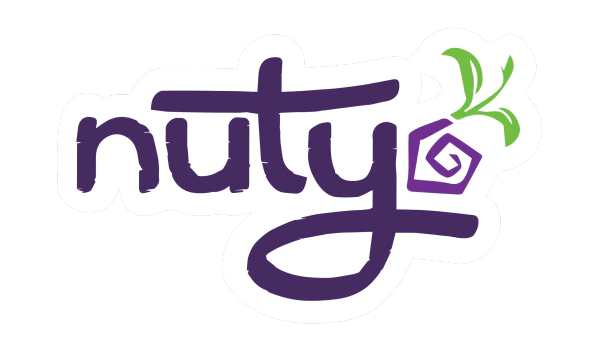
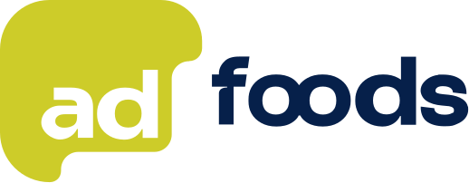
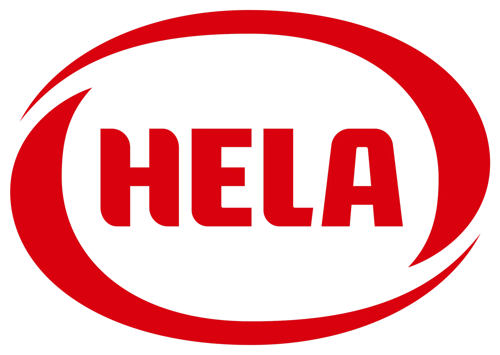


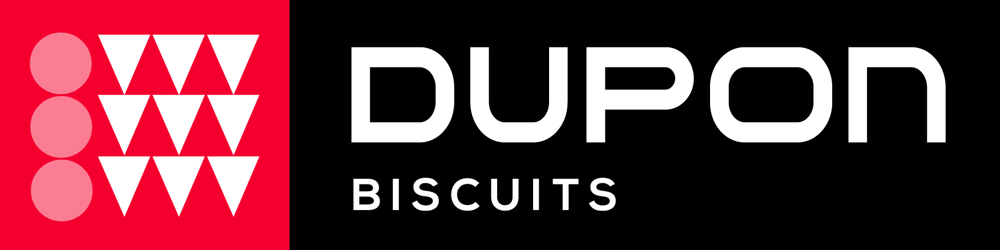
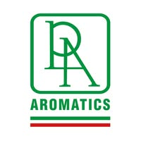

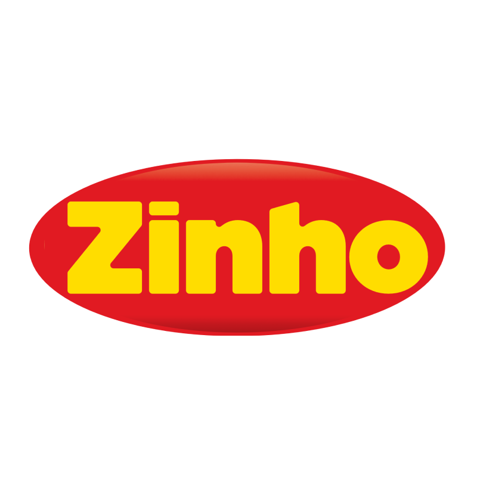
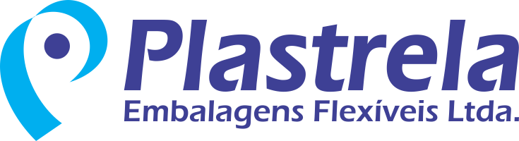

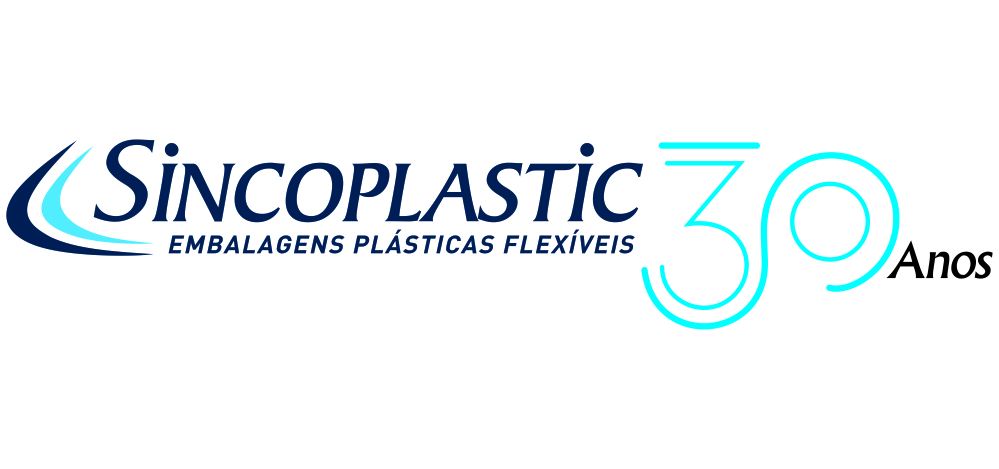

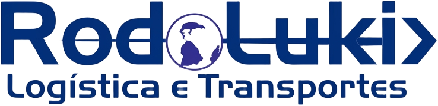
Alimentos, embalagens e distribuição: contextos distintos que exigem a mesma combinação de rigor técnico, clareza e execução.
Palestras & treinamentos
Conhecimento que sai do slide
e entra na rotina.
Casos reais, linguagem direta e conteúdo técnico conectado às decisões do dia a dia. Para equipes que precisam entender não apenas o que fazer, mas por que o padrão existe.
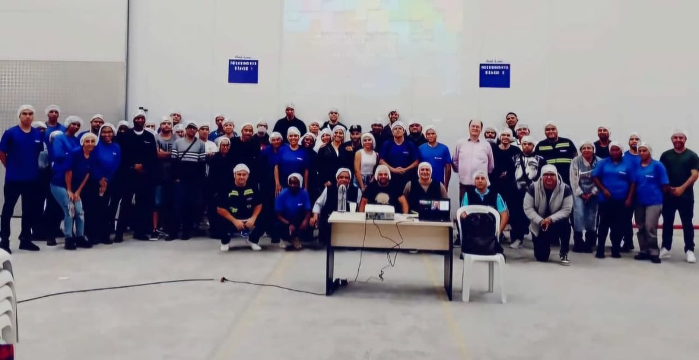
01 02
02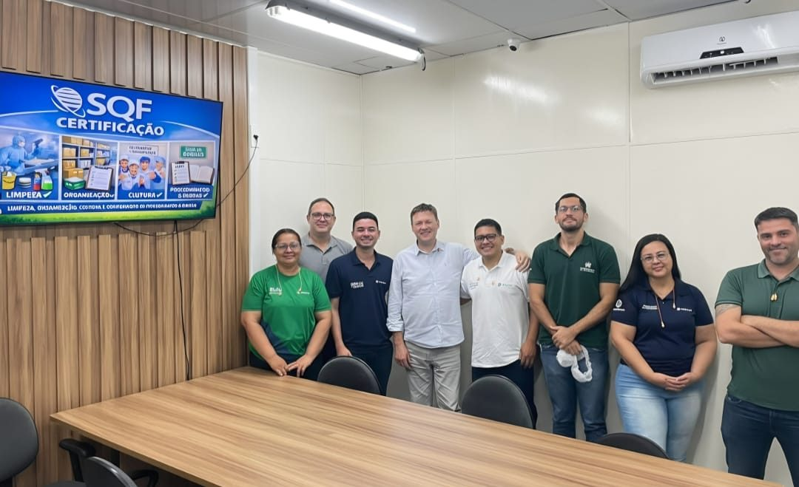
03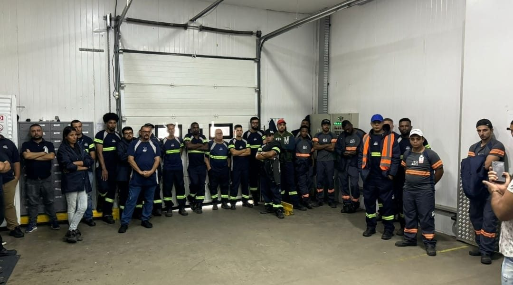
04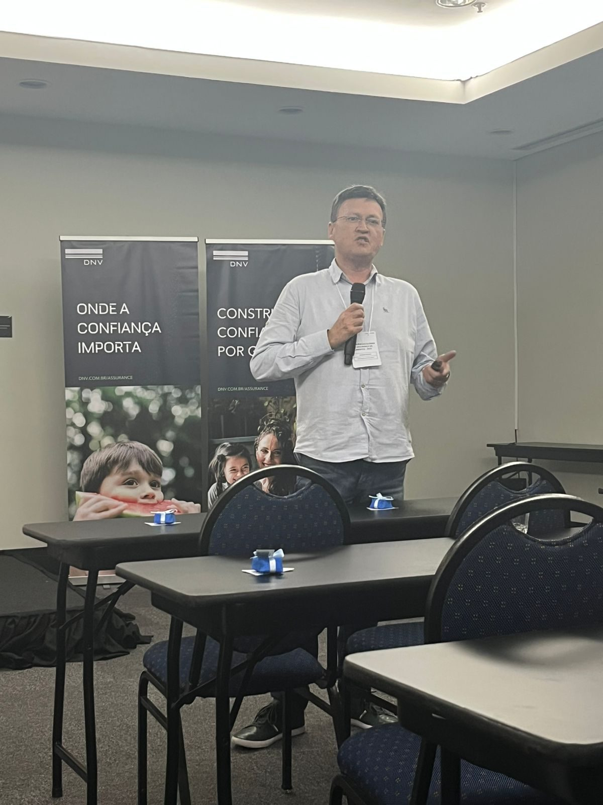
05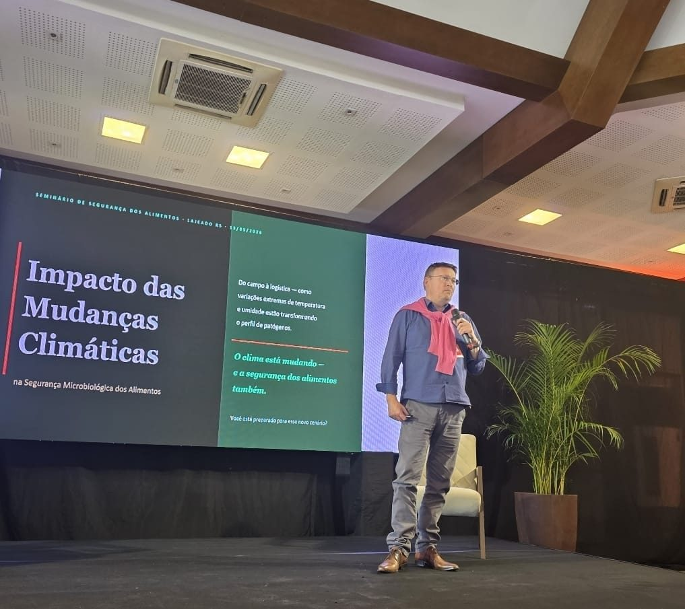
06Palestras sob medida
O tema certo, para quem precisa aplicar.
Conteúdo e profundidade ajustados ao público, ao momento e aos desafios da sua empresa.
CulturaBPFAPPCCFood DefenseLiderança
Próximo passo
Qual é o desafio que não pode
mais ser tratado como rotina?
Pode ser uma certificação, uma auditoria próxima, um desvio recorrente ou uma equipe que perdeu confiança no sistema. Conte o contexto; a primeira conversa serve para organizar o problema e avaliar como eu posso contribuir.
Resposta em até um dia útil · Atendimento no Brasil e no exterior.
Conte seu desafio por e-maileduardostephano1973@gmail.com
Converse pelo WhatsApp(11) 95437-7658
Acompanhe no LinkedIn/in/eduardo-stephano
Base de atendimentoCotia · São Paulo — Brasil